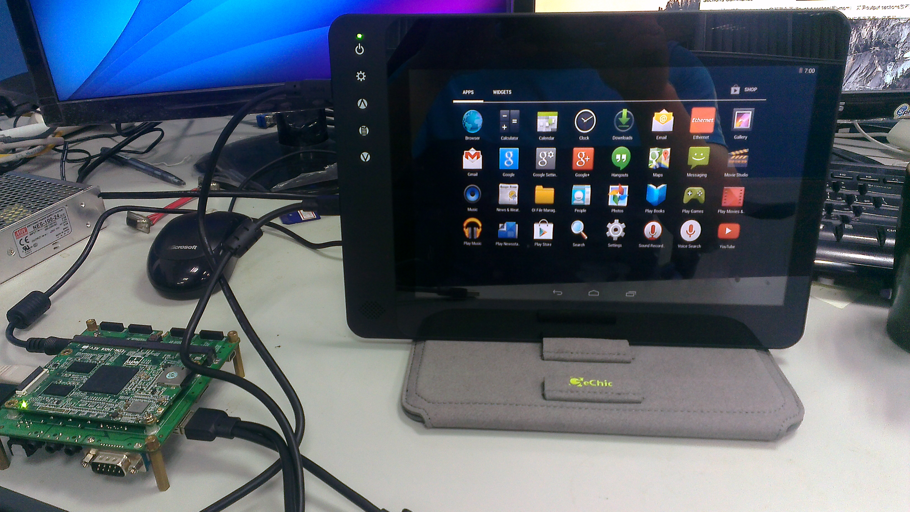

使用 wandboard 兩年多了，我才決定想要紀錄一下如何編譯 wandboard 的 Android 4.4.2 (kitkat) 。這塊板子使用了 Freescale i.MX6 作為 CPU，並且有 Solo (單核)、Dual (雙核)、Quad (四核) 幾個版本可以選擇，並支援 Yocto 、Android、FreeBSD 等系統， 如果想學 Linux Driver、Android 移植等事情，這是一塊不錯的板子，畢竟 CPU 的 datasheet 可以透過 Freescale 官方網站下載（相比之下，raspberry pi 提供的 cpu 資訊不足，不適合用來學習 Linux Kernel driver 移植)。
講完優點，當然要講一下缺點。wandboard 早期提供了 Android 原始碼可以讓你透過
repo 命令去直接編譯你的 Android 系統，但是自 2013 年底他們的 Android source
mirror 就爛掉了，並且至今尚未修復，以後大概也不會修復了。wandboard 官方網站雖然
提供了 Android 原始碼，但是裡面不包含 .git 訊息，因此你也很難從中了解
wandboard 團隊到底改了什麼。
本文將提供一個指引，讓你透過 AOSP 原始碼加上 Freescale 提供的 patch，建立自己的 wandboard Android 系統，而不是只是取得被閹掉 .git 資訊的原始碼來建立 Android。
以個人的立場，我很討厭開發版/廠商使用了開放原始碼專案的程式碼，卻在提供程式碼時 刻意閹掉 .git 訊息。
(以此角度來看 wandboard 並非很好的 Android 開發版)
安裝 repo 命令
要取得 Android 原始碼，就必須先安裝 Android 用來管理專案用的工具 repo ，你可以透
過以下命令將其存放到你的 ~/bin 目錄
curl http://commondatastorage.googleapis.com/git-repo-downloads/repo > ~/bin/repo chmod a+x ~/bin/repo
安裝完成後，可以使用 which 命令來檢查是否可以找到 repo 命令
coldnew@Rosia ~ $ which repo /home/coldnew/bin/repo
如果找不到的話，記得將 ~/bin 加入到你的 PATH 中
coldnew@Rosia ~ $ export PATH="~/bin:$PATH"
取得 AOSP 4.4.2 原始碼
首先先建立我們要用來存放 Android 原始碼的資料夾
coldnew@Rosia ~ $ mkdir ~/aosp_imx-4.4.2_r1 && cd $_
接著透過 repo 命令，初始化你的專案，這邊我們使用 android-4.4.2_r1 這個 branch
coldnew@Rosia ~/aosp_imx-4.4.2_r1 $ repo init -u https://android.googlesource.com/platform/manifest -b android-4.4.2_r1
再來就要使用 repo sync 進行程式碼的取得，這裡可能會很花時間，所以可以趁這機會去泡杯咖啡~
coldnew@Rosia ~/aosp_imx-4.4.2_r1 $ repo sync -j9
下載 Freescale patches
Freescale 針對其旗下的 i.MX6 CPU 提供了建立 Android 系統所需要的 patch，我們可以 到 Freescale 官方網站去下載 Android 4.4.2 所需要的 BSP (Board Support Packages)。
請點選 此處 到 Freescale 註冊並下載此篇文章所需要的 android_kk4.4.2_1.0.0-ga_core_source.tar.gz 檔案。
下載完成後，我們進入到我們剛剛建立的 Android 4.4.2 專案，並將 android_kk4.4.2_1.0.0-ga_core_source.tar.gz 解壓，完成後你現在的目
錄應該是這個樣子:
coldnew@Rosia ~/aosp_imx-4.4.2_r1 $ ls Makefile android_kk4.4.2_1.0.0-ga_core_source bionic build dalvik development docs frameworks libcore ndk packages prebuilts system abi art bootable cts developers device external hardware libnativehelper out pdk sdk tools
接著使用以下命令將 patch 打上
source android_kk4.4.2_1.0.0-ga_core_source/code/kk4.4.2_1.0.0-ga/and_patch.sh c_patch android_kk4.4.2_1.0.0-ga_core_source/code/kk4.4.2_1.0.0-ga imx_kk4.4.2_1.0.0-ga
後面的 imx_kk4.4.2_1.0.0-ga 這個是說當 patch 打上以後，有被修改的部分都會切到
imx_kk4.4.2_1.0.0-ga 這個 branch，方便對程式進行管理。
下載 wandboard 的 device 設定與 kernel/u-boot
除了打上 Freescale 的 patch 以外，我們還需要下載 wandboard 的 kernel/uboot 以及設定檔。
device_fsl_wandboard
在 wandboard 的 Android 程式碼中，他們強制修改了
device/fsl並加上 wandboard 設定，其實這是一個很討厭的作法，所以我將他切割出 來並放置於 GitHub ，你可以使用 git 下載到device/fsl/wandboardgit clone https://github.com/coldnew/device_fsl_wandboard.git -b imx_kk4.4.2_1.0.0-ga device/fsl/wandboard
kernel
接著下載 wandboard 的 kernel 到
kernel_imxgit clone https://github.com/wandboard-org/linux.git -b wandboard_imx_3.0.35_kk4.4.2_1.0.0-ga kernel_imx
u-boot
在 GitHub 上的 wandbord 的 uboot 是不含 Android 版本的，
你看 wandboard 多適合 Android 開發者啊，因此 u-boot 這邊我只好從 wandboard 提供的 Android 原始 碼裡面提取 (該死的 first commit)，請使用我傳到 GitHub 的版本，下載到bootable/bootloader/uboot-imxgit clone https://github.com/coldnew/u-boot-fslc.git -b wandboard_imx_3.0.35_kk4.4.2_1.0.0-ga bootable/bootloader/uboot-imx
進行一些小修正
由於 wandboard 使用的 wifi driver 和 Freescale 提供的開發版 (sabresd …etc) 設
定不太一樣，因此我們必須對 wifi 驅動進行修正，這樣才能避免編譯錯誤。造成這個問題
的主因，是因為在 wandboard 的 BoardConfig.mk 中我們指定了 BOARD_WLAN_DEVICE
的名稱，但是在 hardware/ 下面卻無法有匹配的資訊，導致需要的 lib 沒有被編譯到。
在我們的 BoardConfig.mk 是這樣設定的:
BOARD_WLAN_DEVICE := brcmfmac
因此有個地方要修改：
hardware/realtek/wlan/Android.mk
diff --git a/Android.mk b/Android.mk index ff0812e..7e77b6c 100755 --- a/Android.mk +++ b/Android.mk @@ -1,4 +1,4 @@ -ifeq ($(BOARD_WLAN_DEVICE),$(filter $(BOARD_WLAN_DEVICE), REALTEK UNITE)) +ifeq ($(BOARD_WLAN_DEVICE),$(filter $(BOARD_WLAN_DEVICE), REALTEK UNITE brcmfmac)) include $(call all-subdir-makefiles) endif
hardware/qcom/wlan/qcwcn/Android.mk
diff --git a/Android.mk b/Android.mk index b83e42b..44c9fe7 100644 --- a/Android.mk +++ b/Android.mk @@ -1,3 +1,3 @@ -ifeq ($(BOARD_WLAN_DEVICE),$(filter $(BOARD_WLAN_DEVICE), qcwcn UNITE)) +ifeq ($(BOARD_WLAN_DEVICE),$(filter $(BOARD_WLAN_DEVICE), qcwcn UNITE brcmfmac)) include $(call all-subdir-makefiles) endif
加入 codec 支援
除了前面提到的修正，我們也需要替 wandboard 加上 codec 的支援，這部分要設定在
hardware/imx/alsa 裡面，由於 wandboard 使用的 codec IC 為 sgtl5000 ，因此我們
先增加 config_sgtl5000.h 這個檔案，其內容如下
/* * Copyright (C) 2011 The Android Open Source Project * * Licensed under the Apache License, Version 2.0 (the "License"); * you may not use this file except in compliance with the License. * You may obtain a copy of the License at * * http://www.apache.org/licenses/LICENSE-2.0 * * Unless required by applicable law or agreed to in writing, software * distributed under the License is distributed on an "AS IS" BASIS, * WITHOUT WARRANTIES OR CONDITIONS OF ANY KIND, either express or implied. * See the License for the specific language governing permissions and * limitations under the License. */ /* Copyright (C) 2012 Freescale Semiconductor, Inc. */ #ifndef ANDROID_INCLUDE_IMX_CONFIG_SGTL5000_H #define ANDROID_INCLUDE_IMX_CONFIG_SGTL5000_H #include "audio_hardware.h" /* ALSA cards for IMX, these must be defined according different board / kernel config*/ static struct audio_card sgtl5000_card = { .name = "sgtl5000-audio", .driver_name = "sgtl5000-audio", .supported_out_devices = (AUDIO_DEVICE_OUT_EARPIECE | AUDIO_DEVICE_OUT_SPEAKER | AUDIO_DEVICE_OUT_WIRED_HEADSET | AUDIO_DEVICE_OUT_WIRED_HEADPHONE | AUDIO_DEVICE_OUT_ANLG_DOCK_HEADSET | AUDIO_DEVICE_OUT_DGTL_DOCK_HEADSET | AUDIO_DEVICE_OUT_ALL_SCO | AUDIO_DEVICE_OUT_DEFAULT), .supported_in_devices = ( AUDIO_DEVICE_IN_COMMUNICATION | AUDIO_DEVICE_IN_AMBIENT | AUDIO_DEVICE_IN_BUILTIN_MIC | AUDIO_DEVICE_IN_WIRED_HEADSET | AUDIO_DEVICE_IN_BACK_MIC | AUDIO_DEVICE_IN_ALL_SCO | AUDIO_DEVICE_IN_DEFAULT), .defaults = NULL, .bt_output = NULL, .speaker_output = NULL, .hs_output = NULL, .earpiece_output = NULL, .vx_hs_mic_input = NULL, .mm_main_mic_input = NULL, .vx_main_mic_input = NULL, .mm_hs_mic_input = NULL, .vx_bt_mic_input = NULL, .mm_bt_mic_input = NULL, .card = 0, .out_rate = 0, .out_channels = 0, .out_format = 0, .in_rate = 0, .in_channels = 0, .in_format = 0, }; #endif /* ANDROID_INCLUDE_IMX_CONFIG_HDMI_H */
接著依照以下 patch 修改 tinyalsa_hal.c 這個檔案，將我們的設定加入就完成囉 ~
diff --git a/tinyalsa_hal.c b/tinyalsa_hal.c index 5084138..05a8e9f 100644 --- a/tinyalsa_hal.c +++ b/tinyalsa_hal.c @@ -46,6 +46,7 @@ #include "config_nullcard.h" #include "config_spdif.h" #include "config_cs42888.h" +#include "config_sgtl5000.h" /* ALSA ports for IMX */ @@ -95,10 +96,11 @@ /*"null_card" must be in the end of this array*/ struct audio_card *audio_card_list[SUPPORT_CARD_NUM] = { + &usbaudio_card, + &sgtl5000_card, + &hdmi_card, &wm8958_card, &wm8962_card, - &hdmi_card, - &usbaudio_card, &spdif_card, &cs42888_card, &null_card,
編譯 Android
上面的修改都完成後，我們就可以開始來編譯 Android, 首先要切換一下目前的 shell 環境
coldnew@Rosia ~/aosp_imx-4.4.2_r1 $ source build/envsetup.sh including device/fsl/imx5x/vendorsetup.sh including device/fsl/imx6/vendorsetup.sh including device/fsl/wandboard/vendorsetup.sh including device/samsung/manta/vendorsetup.sh including device/asus/deb/vendorsetup.sh including device/asus/flo/vendorsetup.sh including device/asus/tilapia/vendorsetup.sh including device/asus/grouper/vendorsetup.sh including device/generic/mips/vendorsetup.sh including device/generic/x86/vendorsetup.sh including device/generic/armv7-a-neon/vendorsetup.sh including device/lge/hammerhead/vendorsetup.sh including device/lge/mako/vendorsetup.sh including sdk/bash_completion/adb.bash
接著我們就可以使用 lunch 去選擇想要編譯的環境
coldnew@Rosia ~/aosp_imx-4.4.2_r1 $ lunch
You're building on Linux
Lunch menu... pick a combo:
....
17. hdmidongle_6dq-eng
18. hdmidongle_6dq-user
19. wandboard-eng
20. wandboard-user
21. aosp_manta-userdebug
22. aosp_deb-userdebug
...
Which would you like? [aosp_arm-eng] 20
選擇好後就可以開始進行編譯
coldnew@Rosia ~/aosp_imx-4.4.2_r1 $ m -j9 ============================================ PLATFORM_VERSION_CODENAME=REL PLATFORM_VERSION=4.4.2 TARGET_PRODUCT=wandboard TARGET_BUILD_VARIANT=user TARGET_BUILD_TYPE=release TARGET_BUILD_APPS= TARGET_ARCH=arm TARGET_ARCH_VARIANT=armv7-a-neon TARGET_CPU_VARIANT=cortex-a9 HOST_ARCH=x86 HOST_OS=linux HOST_OS_EXTRA=Linux-4.1.4-gentoo-x86_64-Intel-R-_Core-TM-_i5-5257U_CPU_@_2.70GHz-with-gentoo-2.2 HOST_BUILD_TYPE=release BUILD_ID=1.0.0-rc3 OUT_DIR=out ============================================ ...
假設一切都很順利的話，你就會在 out/target/product/wandboard/ 看到你編譯出來的檔案
coldnew@Rosia ~/aosp_imx-4.4.2_r1 $ ls out/target/product/wandboard/ android-info.txt fake_packages previous_build_config.mk recovery.img system.img boot.img installed-files.txt ramdisk.img root u-boot.bin clean_steps.mk kernel ramdisk-recovery.img symbols u-boot-wandboard_config.bin dex_bootjars obj recovery system uImage
製作 SD 卡並安裝 Android
Android 編譯完成後，就讓我們來製作 SD 卡吧，首先先將你的 SD Card 插入到電腦中，
並確認其編號(這邊以 /dev/sdc 作為範例)
確認 /dev/sdc* 沒有任何設備還在被掛載中
coldnew@Rosia ~ $ sudo umount /dev/sdc*
清空 SD 卡前 1MB 區塊
Freescale i.MX6 會使用 SD 卡的
0x400位址來開始讀取 bootloader，因此我們在此 先將這塊區域清空。coldnew@Rosia ~ $ sudo dd if=/dev/zero of=/dev/sdc bs=1M count=1
使用
wand_fsl_sdcard-part.sh格式化 SD 卡這個腳本會將 SD 卡切割成很多區塊，來符合我們在
device/fsl/wandboard裡面得設定coldnew@Rosia ~ $ sudo ./device/fsl/wandboard/tools/wand_fsl_sdcard-part.sh /dev/sdc
寫入 u-boot SPL
在 wandboard Android 版本的 u-boot 中，是使用 Second Program Loader (SPL) 來 進行二階段開機，因此我們要先將 SPL 燒錄到 SD 卡的
0x400位址coldnew@Rosia ~ $ sudo dd if=bootable/bootloader/uboot-imx/SPL of=/dev/sdc bs=1K seek=1
掛載開機磁區
coldnew@Rosia ~ $ sudo mkdir -p /tmp/imx6 && sudo mount -t vfat /dev/sdc1 /tmp/imx6
複製 kernel、uboot 到開機區 (
/dev/sdc1)sudo mkdir -p /tmp/imx6/boot sudo cp kernel_imx/arch/arm/boot/uImage /tmp/imx6/boot/ sudo cp bootable/bootloader/uboot-imx/u-boot.img /tmp/imx6/boot/ sudo cp bootable/bootloader/uboot-imx/wandboard.bmp.gz /tmp/imx6/boot/ sudo cp bootable/bootloader/uboot-imx/uEnv.txt /tmp/imx6/boot/ sudo mkimage -A arm -O linux -T ramdisk -C none -a 0x10800800 -n "Android Root Filesystem" -d out/target/product/wandboard/ramdisk.img /tmp/imx6/boot/uramdisk.img
複製一些 u-boot 設定檔
sudo cp -rf device/fsl/wandboard/settings /tmp/imx6/ sudo cp /tmp/imx6/settings/uEnv_fairy_hdmi_720P.txt /tmp/imx6/boot/uEnv.txt
如果你的是 wandboard Solo 的話，請再加上以下命令
sudo cp /tmp/imx6/settings/uEnv_wand_solo_hdmi_720P.txt /tmp/imx6/boot/uEnv.txt
解除掛載開機區
coldnew@Rosia ~ $ sudo umount /tmp/imx6
燒錄 system.img
coldnew@Rosia ~ $ sudo dd if=out/target/product/wandboard/system.img of=/dev/sdc5 && sudo sync
加入 Google Apps 支援
我們從 AOSP 下載編譯出來的 Android 系統是不會包含 google-apps 的支援，正常要包含 他的話必須通過 Google 的 Compatibility Test Suite (CTS) 認證 ，因此我們只能使用 另外一種方式來安裝 google-apps 等套件。
要安裝 Google Apps，首先先下載我們需要的檔案，你可以在 Cyanogenmod Wiki 上面找到
下載連結，以 Android 4.4.2 為例，對應到的就是 CM11 ，因此我們可以選擇 CM11
版本的 google-apps 來下載。
下載 gapps-kk-20140606-signed.zip 後，由於 wandboard 預設沒有提供 recovery 模
式，因此我們必須透過以下方式將其安裝到 SD 卡中。
解壓 gapps-kk-20140606-signed.zip 到 /tmp/gapps
coldnew@Rosia ~ $ unzip ~/Downloads/gapps-kk-20140606-signed.zip -d /tmp/gapps
掛載 wandboard SD 卡 的 system 區塊 到 /tmp/system (以
/dev/sdc5為例)coldnew@Rosia ~ $ mkdir -p /tmp/system && sudo mount /dev/sdc5 /tmp/system
將 /tmp/gapps/system 裡面的資料複製到 wandboard SD 卡去
coldnew@Rosia ~ $ sudo cp -a /tmp/gapps/system/* /tmp/system
解除掛載 wandboard SD 卡 的 system 區塊
coldnew@Rosia ~ $ sudo umount /tmp/system && sync
這樣子在 wandboard 就可以使用 google play 等 Google 的程式囉。
截圖
下圖為 wandboard 打上了 Google Play 等程式，並搭配 給奇創造 的 GeChic On-Lap 1002 觸碰式筆記型螢幕，我們將在下一篇文章來講如何讓你的 wandboard 可以使用 GeChic On-Lap 1002 的多點觸碰功能。
